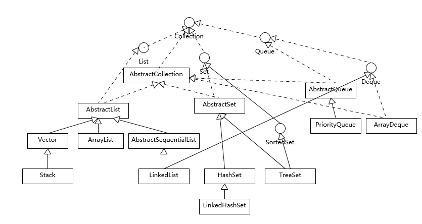

- 00 开篇词 以面试题为切入点，有效提升你的Java内功.md
- 01 谈谈你对Java平台的理解？.md
- 02 Exception和Error有什么区别？.md
- 03 谈谈final、finally、 finalize有什么不同？.md
- 04 强引用、软引用、弱引用、幻象引用有什么区别？.md
- 05 String、StringBuffer、StringBuilder有什么区别？.md
- 06 动态代理是基于什么原理？.md
- 07 int和Integer有什么区别？.md
- 08 对比Vector、ArrayList、LinkedList有何区别？.md
- 09 对比Hashtable、HashMap、TreeMap有什么不同？.md
- 10 如何保证集合是线程安全的_ ConcurrentHashMap如何实现高效地线程安全？.md
- 11 Java提供了哪些IO方式？ NIO如何实现多路复用？.md
- 12 Java有几种文件拷贝方式？哪一种最高效？.md
- 13 谈谈接口和抽象类有什么区别？.md
- 14 谈谈你知道的设计模式？.md
- 15 synchronized和ReentrantLock有什么区别呢？.md
- 16 synchronized底层如何实现？什么是锁的升级、降级？.md
- 17 一个线程两次调用start()方法会出现什么情况？.md
- 18 什么情况下Java程序会产生死锁？如何定位、修复？.md
- 19 Java并发包提供了哪些并发工具类？.md
- 20 并发包中的ConcurrentLinkedQueue和LinkedBlockingQueue有什么区别？.md
- 21 Java并发类库提供的线程池有哪几种？ 分别有什么特点？.md
- 22 AtomicInteger底层实现原理是什么？如何在自己的产品代码中应用CAS操作？.md
- 23 请介绍类加载过程，什么是双亲委派模型？.md
- 24 有哪些方法可以在运行时动态生成一个Java类？.md
- 25 谈谈JVM内存区域的划分，哪些区域可能发生OutOfMemoryError_.md
- 26 如何监控和诊断JVM堆内和堆外内存使用？.md
- 27 Java常见的垃圾收集器有哪些？.md
- 28 谈谈你的GC调优思路_.md
- 29 Java内存模型中的happen-before是什么？.md
- 30 Java程序运行在Docker等容器环境有哪些新问题？.md
- 31 你了解Java应用开发中的注入攻击吗？.md
- 32 如何写出安全的Java代码？.md
- 33 后台服务出现明显“变慢”，谈谈你的诊断思路？.md
- 34 有人说“Lambda能让Java程序慢30倍”，你怎么看？.md
- 35 JVM优化Java代码时都做了什么？.md
- 36 谈谈MySQL支持的事务隔离级别，以及悲观锁和乐观锁的原理和应用场景？.md
- 37 谈谈Spring Bean的生命周期和作用域？.md
- 38 对比Java标准NIO类库，你知道Netty是如何实现更高性能的吗？.md
- 39 谈谈常用的分布式ID的设计方案？Snowflake是否受冬令时切换影响？.md
- 周末福利 谈谈我对Java学习和面试的看法.md
- 结束语 技术没有终点.md
08 对比Vector、ArrayList、LinkedList有何区别？
我们在日常的工作中，能够高效地管理和操作数据是非常重要的。由于每个编程语言支持的数据结构不尽相同，比如我最早学习的C语言，需要自己实现很多基础数据结构，管理和操作会比较麻烦。相比之下，Java则要方便的多，针对通用场景的需求，Java提供了强大的集合框架，大大提高了开发者的生产力。
今天我要问你的是有关集合框架方面的问题，对比Vector、ArrayList、LinkedList有何区别？
典型回答
这三者都是实现集合框架中的List，也就是所谓的有序集合，因此具体功能也比较近似，比如都提供按照位置进行定位、添加或者删除的操作，都提供迭代器以遍历其内容等。但因为具体的设计区别，在行为、性能、线程安全等方面，表现又有很大不同。
Vector是Java早期提供的线程安全的动态数组，如果不需要线程安全，并不建议选择，毕竟同步是有额外开销的。Vector内部是使用对象数组来保存数据，可以根据需要自动的增加容量，当数组已满时，会创建新的数组，并拷贝原有数组数据。
ArrayList是应用更加广泛的动态数组实现，它本身不是线程安全的，所以性能要好很多。与Vector近似，ArrayList也是可以根据需要调整容量，不过两者的调整逻辑有所区别，Vector在扩容时会提高1倍，而ArrayList则是增加50%。
LinkedList顾名思义是Java提供的双向链表，所以它不需要像上面两种那样调整容量，它也不是线程安全的。
考点分析
似乎从我接触Java开始，这个问题就一直是经典的面试题，前面我的回答覆盖了三者的一些基本的设计和实现。
一般来说，也可以补充一下不同容器类型适合的场景：
-
Vector和ArrayList作为动态数组，其内部元素以数组形式顺序存储的，所以非常适合随机访问的场合。除了尾部插入和删除元素，往往性能会相对较差，比如我们在中间位置插入一个元素，需要移动后续所有元素。
-
而LinkedList进行节点插入、删除却要高效得多，但是随机访问性能则要比动态数组慢。
所以，在应用开发中，如果事先可以估计到，应用操作是偏向于插入、删除，还是随机访问较多，就可以针对性的进行选择。这也是面试最常见的一个考察角度，给定一个场景，选择适合的数据结构，所以对于这种典型选择一定要掌握清楚。
考察Java集合框架，我觉得有很多方面需要掌握：
-
Java集合框架的设计结构，至少要有一个整体印象。
-
Java提供的主要容器（集合和Map）类型，了解或掌握对应的数据结构、算法，思考具体技术选择。
-
将问题扩展到性能、并发等领域。
-
集合框架的演进与发展。
作为Java专栏，我会在尽量围绕Java相关进行扩展，否则光是罗列集合部分涉及的数据结构就要占用很大篇幅。这并不代表那些不重要，数据结构和算法是基本功，往往也是必考的点，有些公司甚至以考察这些方面而非常知名（甚至是“臭名昭著”）。我这里以需要掌握典型排序算法为例，你至少需要熟知：
-
内部排序，至少掌握基础算法如归并排序、交换排序（冒泡、快排）、选择排序、插入排序等。
-
外部排序，掌握利用内存和外部存储处理超大数据集，至少要理解过程和思路。
考察算法不仅仅是如何简单实现，面试官往往会刨根问底，比如哪些是排序是不稳定的呢（快排、堆排），或者思考稳定意味着什么；对不同数据集，各种排序的最好或最差情况；从某个角度如何进一步优化（比如空间占用，假设业务场景需要最小辅助空间，这个角度堆排序就比归并优异）等，从简单的了解，到进一步的思考，面试官通常还会观察面试者处理问题和沟通时的思路。
以上只是一个方面的例子，建议学习相关书籍，如《算法导论》《编程珠玑》等，或相关教程。对于特定领域，比如推荐系统，建议咨询领域专家。单纯从面试的角度，很多朋友推荐使用一些算法网站如LeetCode等，帮助复习和准备面试，但坦白说我并没有刷过这些算法题，这也是仁者见仁智者见智的事情，招聘时我更倾向于考察面试者自身最擅长的东西，免得招到纯面试高手。
知识扩展
我们先一起来理解集合框架的整体设计，为了有个直观的印象，我画了一个简要的类图。注意，为了避免混淆，我这里没有把java.util.concurrent下面的线程安全容器添加进来；也没有列出Map容器，虽然通常概念上我们也会把Map作为集合框架的一部分，但是它本身并不是真正的集合（Collection）。
所以，我今天主要围绕狭义的集合框架，其他都会在专栏后面的内容进行讲解。

我们可以看到Java的集合框架，Collection接口是所有集合的根，然后扩展开提供了三大类集合，分别是：
-
List，也就是我们前面介绍最多的有序集合，它提供了方便的访问、插入、删除等操作。
-
Set，Set是不允许重复元素的，这是和List最明显的区别，也就是不存在两个对象equals返回true。我们在日常开发中有很多需要保证元素唯一性的场合。
-
Queue/Deque，则是Java提供的标准队列结构的实现，除了集合的基本功能，它还支持类似先入先出（FIFO， First-in-First-Out）或者后入先出（LIFO，Last-In-First-Out）等特定行为。这里不包括BlockingQueue，因为通常是并发编程场合，所以被放置在并发包里。
每种集合的通用逻辑，都被抽象到相应的抽象类之中，比如AbstractList就集中了各种List操作的通用部分。这些集合不是完全孤立的，比如，LinkedList本身，既是List，也是Deque哦。
如果阅读过更多源码，你会发现，其实，TreeSet代码里实际默认是利用TreeMap实现的，Java类库创建了一个Dummy对象“PRESENT”作为value，然后所有插入的元素其实是以键的形式放入了TreeMap里面；同理，HashSet其实也是以HashMap为基础实现的，原来他们只是Map类的马甲！
就像前面提到过的，我们需要对各种具体集合实现，至少了解基本特征和典型使用场景，以Set的几个实现为例：
-
TreeSet支持自然顺序访问，但是添加、删除、包含等操作要相对低效（log(n)时间）。
-
HashSet则是利用哈希算法，理想情况下，如果哈希散列正常，可以提供常数时间的添加、删除、包含等操作，但是它不保证有序。
-
LinkedHashSet，内部构建了一个记录插入顺序的双向链表，因此提供了按照插入顺序遍历的能力，与此同时，也保证了常数时间的添加、删除、包含等操作，这些操作性能略低于HashSet，因为需要维护链表的开销。
-
在遍历元素时，HashSet性能受自身容量影响，所以初始化时，除非有必要，不然不要将其背后的HashMap容量设置过大。而对于LinkedHashSet，由于其内部链表提供的方便，遍历性能只和元素多少有关系。
我今天介绍的这些集合类，都不是线程安全的，对于java.util.concurrent里面的线程安全容器，我在专栏后面会去介绍。但是，并不代表这些集合完全不能支持并发编程的场景，在Collections工具类中，提供了一系列的synchronized方法，比如
static <T> List<T> synchronizedList(List<T> list)
我们完全可以利用类似方法来实现基本的线程安全集合：
List list = Collections.synchronizedList(new ArrayList());
它的实现，基本就是将每个基本方法，比如get、set、add之类，都通过synchronized添加基本的同步支持，非常简单粗暴，但也非常实用。注意这些方法创建的线程安全集合，都符合迭代时fail-fast行为，当发生意外的并发修改时，尽早抛出ConcurrentModificationException异常，以避免不可预计的行为。
另外一个经常会被考察到的问题，就是理解Java提供的默认排序算法，具体是什么排序方式以及设计思路等。
这个问题本身就是有点陷阱的意味，因为需要区分是Arrays.sort()还是Collections.sort() （底层是调用Arrays.sort()）；什么数据类型；多大的数据集（太小的数据集，复杂排序是没必要的，Java会直接进行二分插入排序）等。
-
对于原始数据类型，目前使用的是所谓双轴快速排序（Dual-Pivot QuickSort），是一种改进的快速排序算法，早期版本是相对传统的快速排序，你可以阅读源码。
-
而对于对象数据类型，目前则是使用TimSort，思想上也是一种归并和二分插入排序（binarySort）结合的优化排序算法。TimSort并不是Java的独创，简单说它的思路是查找数据集中已经排好序的分区（这里叫run），然后合并这些分区来达到排序的目的。
另外，Java 8引入了并行排序算法（直接使用parallelSort方法），这是为了充分利用现代多核处理器的计算能力，底层实现基于fork-join框架（专栏后面会对fork-join进行相对详细的介绍），当处理的数据集比较小的时候，差距不明显，甚至还表现差一点；但是，当数据集增长到数万或百万以上时，提高就非常大了，具体还是取决于处理器和系统环境。
排序算法仍然在不断改进，最近双轴快速排序实现的作者提交了一个更进一步的改进，历时多年的研究，目前正在审核和验证阶段。根据作者的性能测试对比，相比于基于归并排序的实现，新改进可以提高随机数据排序速度提高10%～20%，甚至在其他特征的数据集上也有几倍的提高，有兴趣的话你可以参考具体代码和介绍：- http://mail.openjdk.java.net/pipermail/core-libs-dev/2018-January/051000.html 。
在Java 8之中，Java平台支持了Lambda和Stream，相应的Java集合框架也进行了大范围的增强，以支持类似为集合创建相应stream或者parallelStream的方法实现，我们可以非常方便的实现函数式代码。
阅读Java源代码，你会发现，这些API的设计和实现比较独特，它们并不是实现在抽象类里面，而是以默认方法的形式实现在Collection这样的接口里！这是Java 8在语言层面的新特性，允许接口实现默认方法，理论上来说，我们原来实现在类似Collections这种工具类中的方法，大多可以转换到相应的接口上。针对这一点，我在面向对象主题，会专门梳理Java语言面向对象基本机制的演进。
在Java 9中，Java标准类库提供了一系列的静态工厂方法，比如，List.of()、Set.of()，大大简化了构建小的容器实例的代码量。根据业界实践经验，我们发现相当一部分集合实例都是容量非常有限的，而且在生命周期中并不会进行修改。但是，在原有的Java类库中，我们可能不得不写成：
ArrayList<String> list = new ArrayList<>();
list.add("Hello");
list.add("World");
而利用新的容器静态工厂方法，一句代码就够了，并且保证了不可变性。
List<String> simpleList = List.of("Hello","world");
更进一步，通过各种of静态工厂方法创建的实例，还应用了一些我们所谓的最佳实践，比如，它是不可变的，符合我们对线程安全的需求；它因为不需要考虑扩容，所以空间上更加紧凑等。
如果我们去看of方法的源码，你还会发现一个特别有意思的地方：我们知道Java已经支持所谓的可变参数（varargs），但是官方类库还是提供了一系列特定参数长度的方法，看起来似乎非常不优雅，为什么呢？这其实是为了最优的性能，JVM在处理变长参数的时候会有明显的额外开销，如果你需要实现性能敏感的API，也可以进行参考。
今天我从Verctor、ArrayList、LinkedList开始，逐步分析其设计实现区别、适合的应用场景等，并进一步对集合框架进行了简单的归纳，介绍了集合框架从基础算法到API设计实现的各种改进，希望能对你的日常开发和API设计能够有帮助。
一课一练
关于今天我们讨论的题目你做到心中有数了吗？留一道思考题给你，先思考一个应用场景，比如你需要实现一个云计算任务调度系统，希望可以保证VIP客户的任务被优先处理，你可以利用哪些数据结构或者标准的集合类型呢？更进一步讲，类似场景大多是基于什么数据结构呢？
请你在留言区写写你对这个问题的思考，我会选出经过认真思考的留言，送给你一份学习鼓励金，欢迎你与我一起讨论。
你的朋友是不是也在准备面试呢？你可以“请朋友读”，把今天的题目分享给好友，或许你能帮到他。
© 2019 - 2023 Liangliang Lee. Powered by Vert.x and hexo-theme-book.